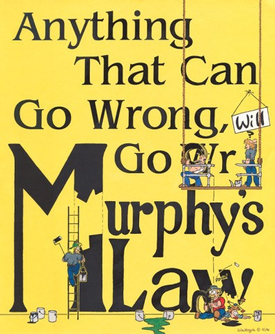

关于墨菲定律

墨菲定律(Murphy’s Law)缘于美国一位名叫墨菲的上尉。 他认为他的某位同事是个倒霉蛋，不经意说了句笑话：“如果一件事情有可能被弄糟，让他去做就一定会弄糟。” 这句话迅速流传。经过多年，这一“定律”逐渐进入习语范畴，其内涵被赋予无穷的创意，出现了众多的变体，“如果坏事有可能发生，不管这种可能性多么小，它总会发生，并引起最大可能的损失”、“If anything can go wrong, it will.(会出错的，终将会出错)”、“笑一笑，明天未必比今天好。”、“东西越好，越不中用”、“别试图教猪唱歌，这样不但不会有结果，还会惹猪不高兴!” 墨菲定律的原话是这样说的： If there are two or more ways to do something, and one of those ways can result in a catastrophe, then someone will do it. (如果有两种选择，其中一种将导致灾难，则必定有人会作出这种选择。) 根据“墨菲定律”:
一、任何事都没有表面看起来那么简单； 二、所有的事都会比你预计的时间长； 三、会出错的事总会出错； 四，如果你担心某种情况发生，那么它就更有可能发生。
我们都有这样的体会，如果在街上准备拦一辆车去赴一个时间紧迫的约会，你会发现街上所有的出租车不是有客就是根本不搭理你，而当你不需要租车的时候，却发现有很多空车在你周围游弋，只待你的一扬手，车随时就停在你的面前。如果一个月前在浴室打碎镜子，尽管仔细检查和冲刷，也不敢光着脚走路，等过了一段时间确定没有危险了，不幸的事还是照样发生，你还是被碎玻璃扎了脚。如果你把一片干面包掉在你的新地毯上，它两面都可能着地。但你把一片一面涂有果酱的面包掉在新地毯上，常常是有果酱的那面朝下。 墨菲定律告诉我们，容易犯错误是人类与生俱来的弱点，不论科技多发达，事故都会发生。而且我们解决问题的手段越高明，面临的麻烦就越严重。所以，我们在事前应该是尽可能想得周到、全面一些，如果真的发生不幸或者损失，就笑着应对吧，关键在于总结所犯的错误，而不是企图掩盖它。
2003年美国“哥伦比亚”号航天飞机即将返回地面时，在美国得克萨斯州中部地区上空解体，机上6名美国宇航员以及首位进入太空的以色列宇航员拉蒙全部遇难。“哥伦比亚”号航天飞机失事也印证了墨菲定律。如此复杂的系统是一定要出事的，不是今天，就是明天，合情合理。一次事故之后，人们总是要积极寻找事故原因，以防止下一次事故，这是人的一般理性都能够理解的，否则，或者从此放弃航天事业，或者听任下一次事故再次发生，这都不是一个国家能够接受的结果。 人永远也不可能成为上帝，当你妄自尊大时，“墨菲定律”会叫你知道厉害；相反，如果你承认自己的无知，“墨菲定律”会帮助你做得更严密些。 这其实是概率在起作用，人算不如天算，如老话说的“上的山多终遇虎”。还有“祸不单行”。如彩票，连着几期没大奖，最后必定滚出一个千万大奖来，灾祸发生的概率虽然也很小，但累积到一定程度，也会从最薄弱环节爆发。所以关键是要平时清扫死角，消除不安全隐患，降低事故概率。
怕什么来什么，好的状态是只想技术要领，忘掉自己。